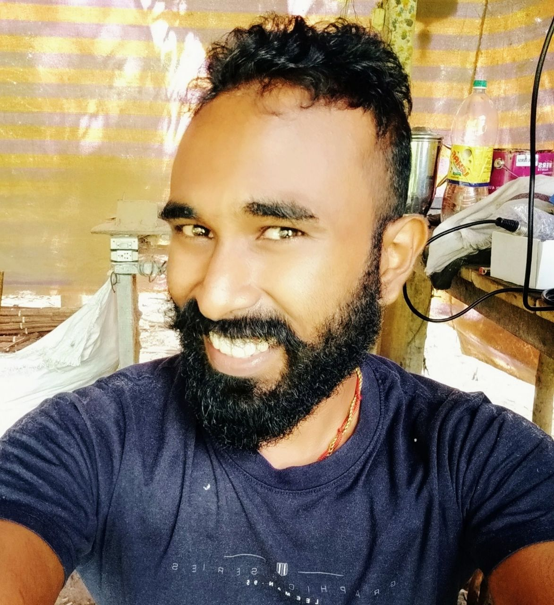

Sachu K Prabha

Summary
I am a hardworking and dedicated individual with experience in web development and network administration.
Education
Bachelor of Science, Computer Science - University of Kerala (2013-2016)
Work experience
June 2014 - May 2018
- Worked as a network expert in Chegg India Limited
- Solving all tyeps of mathematical questions on time
- Jobs include Teaching, Conduct seminar etc
May 2018 - Present
- Accountant at Kallattuveettil Hammock Productions
Skills
- Microsoft office ⭐️⭐️⭐️⭐️⭐️
- Adobe Photoshop ⭐️⭐️⭐️
- Organizational Skills ⭐️⭐️⭐️⭐️⭐️